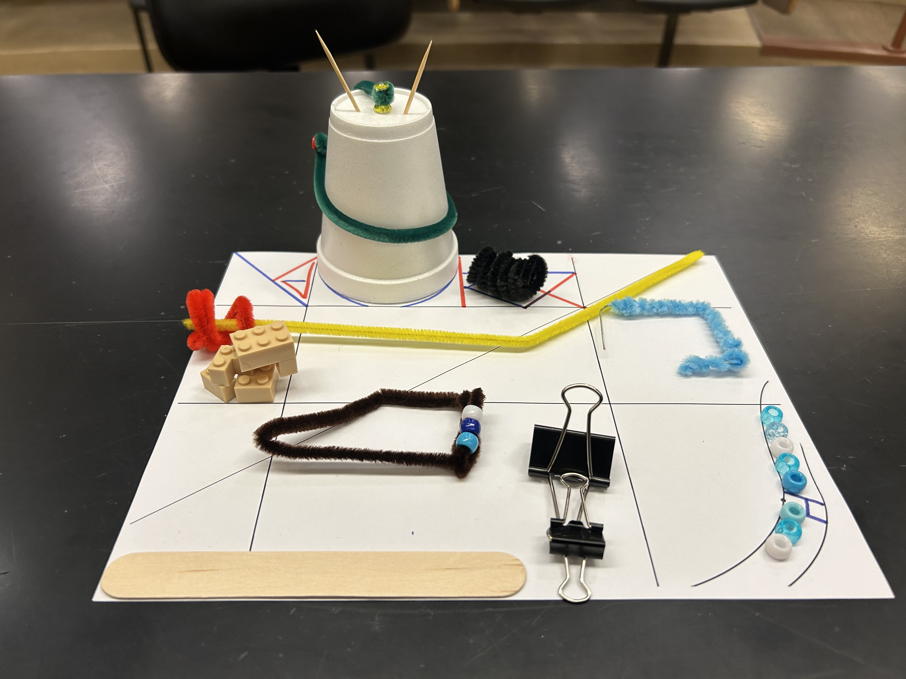
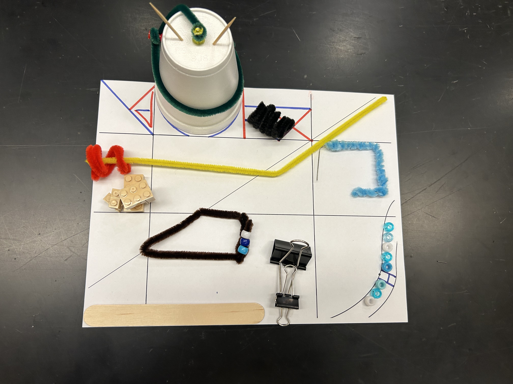
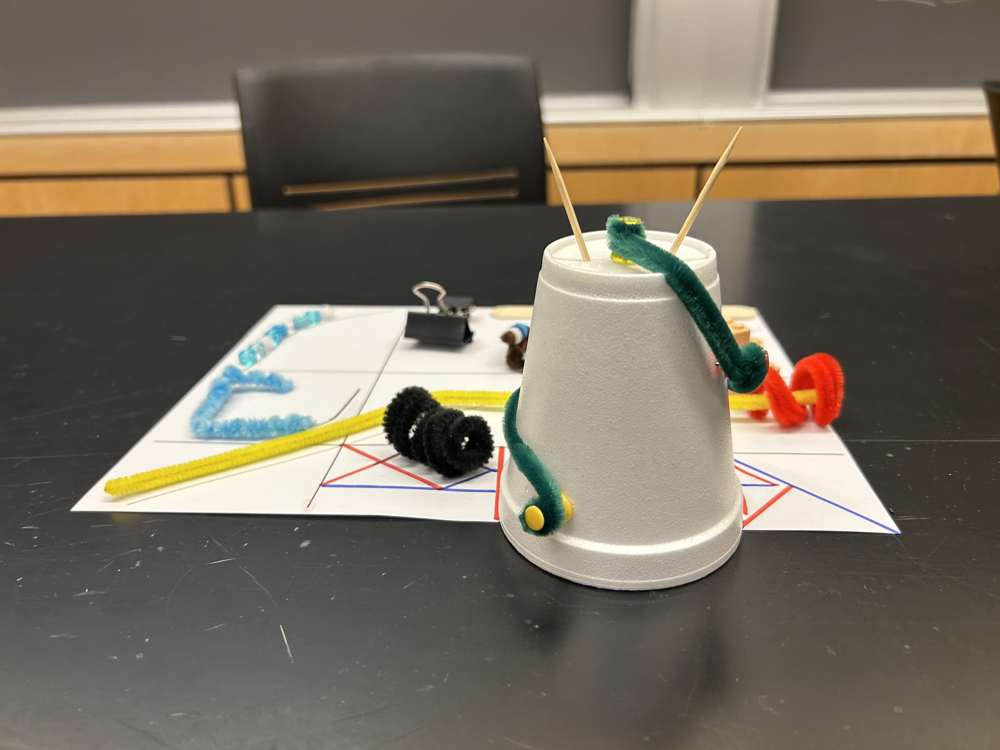
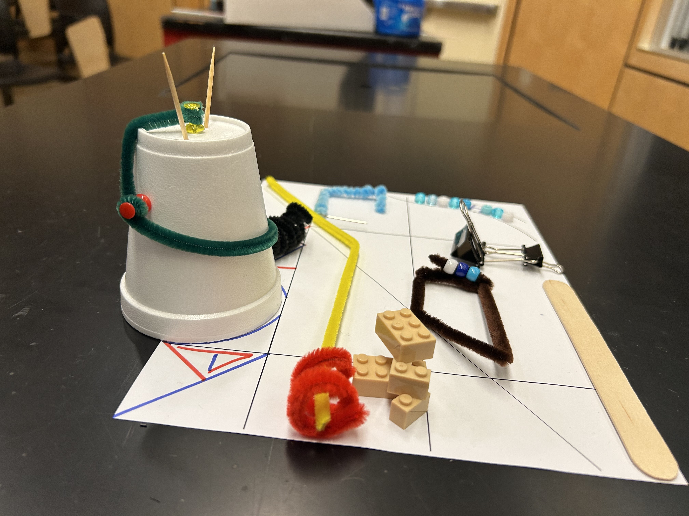
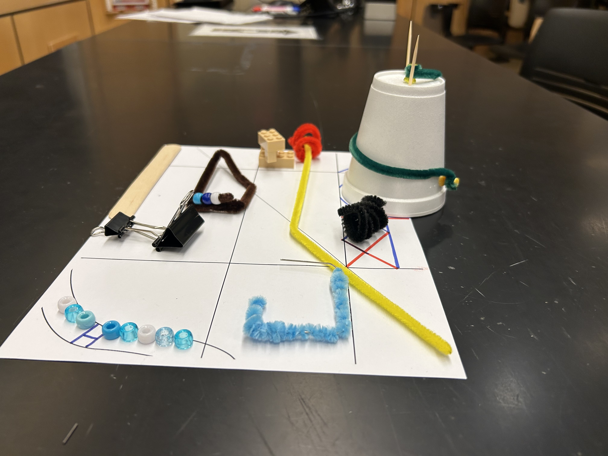

Test Setup — Study These Photos





Conventions Reference — How to Describe Placements
1. Chess-Board Coordinates
Use columns a–h (left→right) and rows 1–8 (bottom→top). If the paper isn't square, extend: a1–k8.
Draw line c1-c8 = left edge of column cDiagonal:
Draw diagonal a8-b7 = top-left → bottom-rightObject:
Cup down c8-d7 = cup spans those squares
2. Clock Positions (within a square)
Use clock face to pinpoint a region inside a grid square: 12:00 = top, 3:00 = right, 6:00 = bottom, 9:00 = left.
Red pin at 11:00Shapes:
J shape, start 2:00, end 6:00Bead line:
start 9:00, end 3:00
3. Cardinal Directions
Use N S E W and combinations (NE, WSW, NNW) for orientation and facing direction of larger objects.
mouth facing SPointing:
pointing WSWAngle:
120° V-shape, W-NE
State Description Format
Pattern: [grid square(s)] : [count] [item], [shape], [placement details]. [colors/extras]
g1-h3: 8 beads, J shape, start 2:00 end 6:00. cy, lb, w, cy, lb, w, cy, lb
- Draw line a1-h1
- Draw line a1-a8
- Draw line h1-h8
- Draw line a8-h8
- Draw line b1-f1 (popsicle stick, along south edge)
- Draw line b8-f8 (popsicle stick, along north edge)
- Draw diagonal b1-f3 (popsicle stick)
- Draw line a1-a8 (popsicle stick, left edge)
- Draw diagonal a1-h8
- Draw diagonal f6-b2
- Draw diagonal f7-d5 (yellow pipe cleaner, before bend)
- Draw line f7-f1 (yellow pipe cleaner, vertical)
Brain Break!
"I tried to describe my bone's location as b3, 9:00... then I buried it at a completely different coordinate."
- Cup up c7-d8
- Cup down c7-d8
- Cup down a1-b2
- Cup down f7-g8
- Right side, slightly below center
- Directly at the top (12:00)
- Left side, at center height (9:00)
- Upper-left area, between top and left
- Red pin at 11:00, solid pin at 9:00
- Red pin at 1:00, solid pin at 3:00
- Solid pin at 11:00, red pin at 9:00
- Red pin at 12:00, solid pin at 6:00
Quick break!
"My ears point to 11:00 and 1:00. That's 2 points on the rubric right there!"
- Beads at bottom right, some colors, in a line
- g1-h2: beads, line, blue and white
- g1-h2: 8 beads, curve shape, start 6:00 end 9:00. cy, lb, w, cy, lb, w, cy, w
- 8 beads somewhere near h1, J shape
- Blue pipe cleaner, somewhere on right, square
- f2-g3: 1 unfolded paperclip + 1 lt-blue pipe cleaner, partial square, NW corner at f3 intersection
- Draw line f2-g3 (blue pipe cleaner)
- f2-g3: 1 blue pipe cleaner, circle shape, 12:00
- Big binder clip, mouth facing S, laying on side
- Big binder clip, mouth facing N, standing up
- Big binder clip, mouth at 6:00, flat
- Big binder clip, opening E-W
Keep going!
"Cardinal directions? I only know one direction — toward the treats. That's always North to me."
- b1: black coil, openings N-S, 6 windings
- Row 1 Col 2: black pipe cleaner, flat, openings E-W
- a2: black pipe cleaner, coil, openings NW-SE, ~6 tight windings
- b1: 1 black pipe cleaner, coil ~6 tight windings, openings NW-SE
- Brown trapezoid, wider side S, pointy tip N
- Brown trapezoid, pointy tip SW, wider side NE
- Brown trapezoid, pointing E, wider side W
- Brown trapezoid, pointy tip NW, wider side SE
- Red pipe cleaner near yellow pipe cleaner, spiral, 3 loops
- b5: 1 red pipe cleaner, spiral 3 loops, opening N-S, around yellow pipe cleaner
- b5: 1 red pipe cleaner, spiral 3 loops, ~finger diameter, opening W-E, wrapped around yellow pipe cleaner
- Draw spiral b5 (red, 3 loops, W-E)
Almost there!
"3 loops, finger diameter, opening W-E? That's basically my burrow entrance. I should get rubric credit."
- Green pipe cleaner: from solid pin (9:00) → through toothpicks → loop around red pin (11:00) → to clear yellow pin (top)
- Green pipe cleaner: 360° ring around cup rim at 6:00
- Green pipe cleaner: straight line from 3:00 to 9:00
- Green pipe cleaner: from red pin (11:00) → to solid pin (9:00), no loops
- 2×1 brick pointing NW, 2×3 brick pointing ENE
- 2×1 brick pointing ~SE, 2×3 brick pointing ~WSW
- 2×1 brick pointing S, 2×3 brick pointing W
- 2×1 brick pointing E, 2×3 brick pointing N
- Brown shape in center of grid, trapezoid
- c3-e4: 1 brown pipe cleaner, flat, triangle shape, tip at center
- c3-e4: 1 brown pipe cleaner, flat trapezoid, pointy tip at intersection of Lmost vert line + diag line, wider side NE
- Draw trapezoid c3-e4 (brown, flat)
- Yellow pipe cleaner, diagonal, from a1 to h8
- f8: 1 yellow pipe cleaner, straight line, going left
- Yellow pipe cleaner, 3 bends, from NW corner to SE corner, on top of cup
- ~g8 to off-page left of Vcent left edge: 1 yellow pipe cleaner, flat, 1 bend, follows road. Start slightly left of NE corner.
You made it! Dog & Rabbit celebrate:
"97 rubric points survived. That's worth at LEAST a treat and a carrot."
Quiz Complete!
WIDI Science Oly Joke
Why did the WIDI Writer bring a chess board, a clock, AND a compass to the event?
Because the rubric said "pin at 11:00, mouth facing SSW, at intersection of leftmost vertical and diagonal" — and they STILL lost a point for not specifying which atom of the pin faces north! ♟
(Click the blur to reveal!)